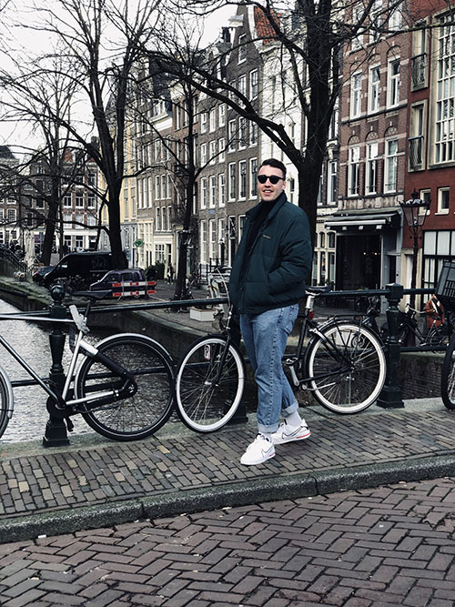

Über Mich
Ich heiße Leon Herrmann und bin 19 Jahre alt.
Ich studiere Medieninformatik an der Hochschule Furtwangen.
Hier sieht man ein schönes Landschaftsbild.
eine Tabelle hab ich auch noch eingefügt
| Samstag | Sonntag | ... |
|---|---|---|
| 50€ | Kater | Studieren |
Bienen zu sehen ist auch immer schön.
Hier kommst du wieder zum Anfang.